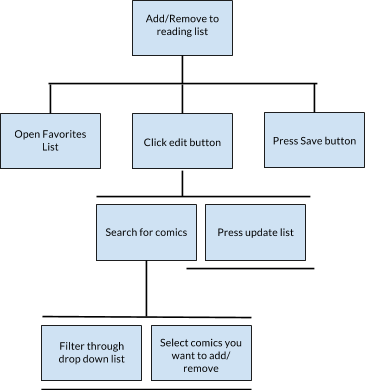

Beatrice Huang
Shirley Yue
Joana Vukatana
Project Assignment #7
Link to P7Project Assignment #6
Link to prototypeBriefing
1. Upload an Issue
2. Read a series
3. Add a series to a Reading List
4. Buy a comic issue
Tasks
Project Assignment #5b
Briefing
Hello, we are designing a web application for reading and storing comic book files. There are additional functions of purchasing new files and creating a reading list. You may interact with it like you would with other online applications for either manga or comics you might have used in the past.
Informed Consent:
We are conducting a study to find out what people think about our new web application called Comicable. We will not record or publish any information with your name. This is for a course we’re taking in Human-Computer Interaction from Professor Sprague in the College of Computer and Information Science. Your participation is voluntary and you can stop anytime and ask that your data not be used. It should take no longer than 20 minutes. Do you agree to participate?
The purpose of today’s session is to help us figure out how to make Comicable’s interface more intuitive before we finish developing the final product. Since we have not yet produced a web version of Comicable, we will present you with paper versions of the interface and Joana will act as the computer. You may interact with the paper prototypes just as you would on an actual computer.
We will present you with four different tasks and your goal is to try to complete them using the paper interface. While you do this, please feel free to speak aloud any questions, comments, or concerns (if something is confusing or doesn’t make sense, tell us!) The other members of the team will be watching and quietly taking notes.
The prototype still has some rough edges—we’re still thinking through how it should work and some parts of it are incomplete. We want to get some feedback about how well this design works before we start working on the finished.
As we mentioned before, Joana will be playing the computer. Joana won’t be able to explain anything. If you want to do something, you’ll need to interact with the prototype just as you would on a computer. Use your finger to click on buttons. If you need to write something, you can use this pencil as your keyboard. It is perfectly okay to write on the prototype.
Please tell us what makes sense to you, what’s confusing, and any questions that come to mind. Your questions are especially valuable, but we may not answer them right away because our goal is to change the interface so it answers them.
OK, here’s the first thing we’d like you to do. Take a minute to read this and let me know if it makes sense. If so, then whenever you’re ready please show us what you would do first.
Scenario Tasks
- Upload a comic file from your computer and fill in the appropriate information.
- Read issue #3 from the series ‘Spiderman
- Purchase a comic file from the series ‘Aquaman
- Create a reading list of your favorite comic book series
Demographic:
Our three participants are all 4th or 5th year students at Northeastern University.
Test Scenario:
The testing took place Saturday March 12th around 3PM in an off-campus apartment living room. A dining table was used as a surface to work on. In addition to the paper prototype, the only other equipment that was used was a notebook and a laptop for the observation notes.
Observations
- When wanting to upload a comic book, the participants were confused about the dialog window, because they didn’t realize that for the text areas, they shouldn’t click on Title/Issue # but only write from the keyboard. They didn’t realize that the cursor started in the field, so we should’ve specified that they can just start typing when the cursor is in those fields.
- The “Choose Cover” button didn’t get noticed, so the participants skipped that step, which is the most important one when uploading a comic book, since all our comic books need a cover photo. We should’ve specified that choosing a cover image is a required step before trying to upload a comic book.
- ‘$’ sign didn’t play any role, because it didn’t seem logical for the participants to click it when trying to buy an issue. We should’ve made it more visible.
- We need to make sure the tabs have consistent names. Two different prototypes had the ‘Recently Released’ tab named differently and the participants got confused.
- After having entered the payment information, the users complained that we were four dialog windows deep. Instead of piling the prototype papers on top of each other, we should’ve have kept only the one that should the current action and discarded the previous ones. That way, it is clear to users that they won’t be dealing with nested pop-ups.
- When asked to create a Reading list, they were confused as to where to start, either from the front page, or go to “Reading List” tab. We should’ve specified that they can add the issues directly from the “All Files” page by clicking the heart button and that the “Reading List” section was to see the comic books already read.
Application Problems:
- Unnecessary confirmation dialogs. The participants seemed to be annoyed by the pop-ups, and instead we should use either messages or other visual feedback(see Participant 1/suggestion
- Our ‘Recently Released’ section should be called ‘Store’ instead and have a breakdown of most recent and old issues, so the users can have the choice of reading both old and new comic books.
- Heart icon and info button should look more like a clickable button.
- Misconnection between the heart button and its relation to the “Reading List” section. We should either rename it to “Favorites” and make the heart button bigger, or change the functionality completely. The new functionality consists in having a “Reading Lists” instead, which would be a dropdown of all the different reading lists that the user has created based on the genre of the comic book. We’ll also have to replace the heart button with a +/Add button, which will add a certain comic book to a specific reading list. This way we give the user the chance to categorize reading lists, and not just have only one.
- Instead of giving a dialog box when adding to reading list, make feedback less intrusive like a toast notification
Interview Notes:
-
Participant 1
- When asked to do the first task(i.e to upload a comic book), the participant was confused whether or not he already had an account on Comicable.
- Suggestion 1: when putting information about the comic book that’s about to be uploaded, we should support Tab, so the user can go from one field to the other only by hitting Tab button and not by having to click on the fields every single time.
- Suggestion 2: instead of the confirmation dialog, which he thought was unnecessary, add visual effect. Either have the uploaded comic book appear on the first row and have that tile/comic book blink either red or green color, or have a “Thanks for uploading” message right below “All Files” or above the grid.
- Asked if her payment information was saved, since she was a returning users. If not, she expressed that it is annoying having to enter the payment info every time she wants to buy an issue.
- Annoyed by the amount of confirmation dialogs. She said there need to be less.
- Suggestion: following up on the last thought, she suggested that after clicking “Complete Purchase”, we shouldn’t have a pop-up, but show either a message saying “Your payment was successful” or a link to the receipt.
- He was confused about adding a comic book to his reading list. He didn’t see the connection between the heart button and the “Reading List” section.
- Suggestion: inside the “Reading List” section, have a +/Add button which adds the comic book directly. We should add this functionality because it makes that section have a fuller purpose. As it is right now, the only function of the “Reading List” section is to see the list of comic books marked as “Read”.
Participant 2:
Participant 3
Results:
Time to complete all four tasks:
- Participant 1: 14:35
- Participant 2: 12:10
- Participant 3: 15:45
Project Assignment #5a
Paper Prototypes:
Login Screen

Task 1: Upload a File

Read a Comic Issue
Add A Series to your Reading List

Buy a Comic Issue

Project Assignment #4
-
Interaction Scenarios:
Scenario 1: Uploading own file:
Matt is a 21 year old college student who is also an avid comic book reader. After commuting from home for the first two years of his college life he is excited to finally live on campus. However, to save on housing costs he has to share a small dorm room with two other roommates. He can’t bring his prized collection 150 Original Batman mint-condition issues to display nor does he have much space for the other 10 series he is currently keeping up with. He realizes that continuing to collect physical issues will be an issue and stumbles upon Comicable, an online repository for electronic versions of comics. Comicable allows him to keep up with all of his favorite issues in a way that doesn’t take up room in his small dorm. He logs into the website with his username and password and it brings him to the homepage displaying his last 15 read comics by their cover. On the upper right side he clicks the upload button to start importing the latest files he has. The upload button opens up a dialogue box where he can choose the file he wants to upload. Once the file is uploaded onto Comicable, the dialogue box changes so he can describe the comic he just uploaded. In this dialogue box he can upload a cover image, input the title, issue number, author, genre and short description. Once he exits he will see the comic file he just uploaded displayed first on the homepage. He likes being able to upload his own files and can easily keep adding issues as they come out.Scenario 2: Purchasing from Comicable:
Beth is a 12 year old middle school student who saw the Avengers movies and wants to get into the comic book scene however, she has no idea where to start. She tries to go into a bookstore but all doesn’t know where to get them. She has to find a specialty comic shop but when she’s there, the physical issues are too expensive. The comic book store owner introduced her to their new collaboration program with Comicable. She creates a new account for Comicable in store and immediately logs in. Her homepage does not have any files shown in the top dashboard because her account is new but the second dashboard shows her the recently released comic issues by cover. She filters through the issues by searching for any titles named “Avengers”. Under each Avengers covers there is the title and the symbol “$”. For the price of less than half a physical issue, she can click the “$” symbol on Comicable and simply buy the electronic version from the store. Once she pays, the issue will immediately be shown on the top dashboard. She would save a lot in the long run if reading comics becomes a hobby and she can carry all her files without weighing her down.Scenario 3: Creating a Favorites/Reading List:
Annie is a tech-savvy, 28 year old office worker who likes to read electronic comics in her spare time. She recently received a large amount of electronic issues from her friend and is currently storing all these files locally in Calibre, an ebook manager. However, she is starting to get overwhelmed by the amount of unordered files and lack of categories. She starts an Excel spreadsheet to organize everything but soon abandons it after finding out about Comicable. She makes an account with Comicable and immediately begins uploading all her files through the upload button. When she is done, she is taken back to the front page where they are all displayed on the top dashboard. She realizes she only wants to read through one complete series at a time. She chooses to read Justice League first and filters them to only show Justice league comics. Then by selecting the “♥” under the cover, they will be added to a reading list so she can easily access them from the front page. She also likes having the option to delete in case she changes her mind about which comics to keep up with. -
Initial Main Screen Design:

We chose to go with option #2 because we thought it was the cleanest out of the three and the least cluttered design-wise. The grid format allows the comic book cover to be the main attraction with more descriptive options available at the click of a small button. The tabs keep each main task separate: My files, Recently Added, and Reading List.
-
Overall Design:
Login Page: Where new and old users log into their Comicable account

My Files: Home screen of Comicable showing either the last viewed comics by their cover image or in the case of a new user a message stating they should upload or purchase.

Reading List: A page where users would view the list they created when they pressed the “♥” symbol

Recently Added: A page where users can browse the newest issues released and purchase them through the store if they wish

-
Scenario Storyboards:
File Upload Scenario

Buy a Comic Scenario

Add to Favorites List
Project Assignment #3
-
Activity Design Scenarios:
Scenario 1: Uploading own file:
Matt is a 21 year old college student who is also an avid comic book reader. After commuting from home for the first two years of his college life he is excited to finally live on campus. However, to save on housing costs he has to share a small dorm room with two other roommates. He realizes that continuing to collect physical issues will be an issue and stumbles upon Comicable, an online repository for electronic versions of comics. Comicable allows him to keep up with all of his favorite issues in a way that doesn’t take up room in his small dorm. With the “+” symbol, he is able to upload his own files and can easily keep adding issues as they come out. He can then see all of his files on the homepage listed by their cover and sort if necessary.Scenario 2: Ease of use:
Beth is a 12 year old middle school student who saw the Avengers movies and wants to get into the comic book scene however, she has no idea where to start. She tries to go into a bookstore but all doesn’t know where to get them. She has to find a specialty comic shop but when she’s there, the physical issues are too expensive. The comic book store owner introduced her to their new collaboration program with Comicable. For the price of less than half a physical issue, she can click the “$” symbol on Comicable and simply buy the electronic version from the store. Comicable will then store her issue for her where she can read them anywhere online. She would save a lot in the long run if reading comics becomes a hobby and she can carry all her files without weighing her down.Scenario 3: Creating a Favorites/Reading List:
Annie is a techsavvy, 28 year old office worker who likes to read electronic comics in her spare time. She currently stores all her files locally in Calibre, an ebook manager, but is starting to get overwhelmed by the amount of unordered files and lack of categories. She starts an Excel spreadsheet to organize everything but soon abandons it after finding out about Comicable. With Comicable she can easily upload her files by clicking the “+” symbol and see them all by their cover icon. Then by selecting the “♥” they will be added to a reading list so she can easily access her favorite issues. She also likes having the option to delete since she often changes her mind about which comics to keep up with. -
Metaphors:
Magnifying glass is a metaphor to zoom in
Heart is a metaphor for a favorite list
Plus button is a metaphor to upload file
Trash can is a metaphor to delete file
Comic Book cover is a metaphor for the electronic issue
Money symbol is a metaphor to purchase comic files
Project Assignment #2
Title: Comicable
-
Problem:
As much fun as reading paper comics can be, there are certain limitations to it. First and most important one is space. Because of how much space it takes to hold on to so many issues and because so many issues exist, many comic book readers are turning to electronic versions of their favorite comics. Just like how there is Kindle for books, or Calibre to manage e-books libraries, or numerous websites for magazines and newspapers, there are also some comic book sites as well. The only sites that allow users to read and upload their own comic files have a complicated and unappealing user interface. These sites don’t have the option to keep track of new releases or have a reading list to keep up with the amount of comic issues a user is currently reading. With the many comic universes and parallel timelines that exist, it is almost impossible to keep track of your issues unless you had a reference to guide you.
-
Users:
Our primary stakeholders are comic book enthusiasts. They would have to be technologically friendly because our idea is basically a webpage where users can upload their favourite comics, browse for other comic books, and create their own shareable reading lists. These kind of users will directly benefit from our project, as it will make it a better experience being passionate about comic books.
John is a 21 year old college student who has grown up with comic books his whole life. He is now at Northeastern University studying computer science and is an avid fan of Aquaman.
Our secondary stakeholders would be other comic book websites and comic book sellers. Although our project’s intention isn’t to lower their online engagement or customer buyings, it will have a slight negative impact on them. The more people start to use online services the less they'll go out and actually buy physical copies of comic book issues. Comic book stores will have the option to sell electronic version of their comics for cheaper and they pay us to host the files.
Mary age 55, is the CEO of a local comics book store chain. She has realized that more and more people have stopped coming into her store. She wants to keep her store afloat and wants to go electronic. -
Task Analysis:
1. Upload a comic book file

2. Create favorites reading list

3. Add or Remove from favorites
 -
Problem Scenarios:
Scenario 1: Uploading own files
Matt is a 21 year old college student who is also an avid comic book reader. After commuting from home for the first two years of his college life he is excited to finally live on campus. However, to save on housing costs he has to share a small dorm room with two other roommates. Matt brings all his comic books to campus and realizes that he has nowhere to put them except in the dusty corner under his bed. He realizes that continuing to collect physical issues will be an issue and hopes to find a more convenient way to keep up with his favorite series.Scenario 2: Ease of use
Beth is a 12 year old middle school student who saw the Avengers movies and wants to get into the comic book scene however, she has no idea where to start. She tries to go into a bookstore but all doesn’t know where to get them. She has to find a specialty comic shop but when she’s there, the physical issues are too expensive so she wants to look for an online source. She found some files for the comics but when she tried to google around for a good app to use she comes up short. She wishes there was an foolproof way to read her comics online.Scenario 3: Creating a Favorites/Reading List
Annie is a tech-savvy, 28 year old office worker who likes to read electronic comics in her spare time. She currently stores all her files locally in Calibre, an ebook manager, but is starting to get overwhelmed by the amount of unordered files and lack of categories. She starts an Excel spreadsheet to organize everything but wishes there was a more visually appealing way to do the same task. -
Usability Requirements:
- Users will be able to upload their own comic book issues
- Users will be able to see recently released issues
- Users will be able to create a favorites list
- Users will be able to add and remove issues from a favorites list
- Users can filter through a list of comics by genre, title or author
- Users will be able to bookmark what issue they’re on
- Users can choose to link off and buy comicbook issues from third party sellers
Project Assignment #1
-
Problem:
Collecting comic books is an expensive hobby that requires a lot of physical space. Due to this, many users are turning to electronic versions of their favorite comics. The problem is that comic book readers have a hard time reading and uploading their comics online. The only sites that currently have this function also has a nonintuitive user interface. Another problem is the huge volume of comic releases daily; it is almost impossible to keep up with the amount of comic issues that a user is currently reading.
-
Target Users:
Our target users are comic book enthusiasts who want an online resource to upload and read virtual copies of comic book issues. These users might have poor organizational skills so they can use this as a well designed catalogue. Other target users can also be casual readers that can appreciate good design.
-
Solution:
We will create a web application that will let you upload as many comic files as you want and read it online. You can put in a reading list and it'll let you know what issue you have read. We will also have a list of any comic book issues have recently came out. This list will allow filtering through by keywords. This is going to be written as a Javascript frontend web application and Java/Python backend.